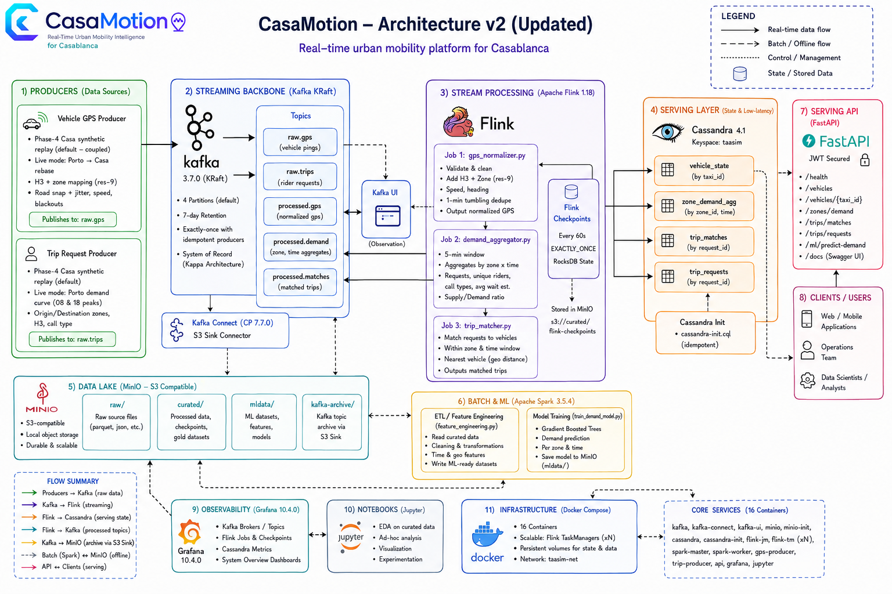

Real-Time Urban Mobility Intelligence Platform for Casablanca, Morocco
Kafka Flink Spark
Cassandra MinIO FastAPI
Grafana Docker
Kappa streaming architecture · 16-container stack · ML demand forecasting
CasaMotion turns Casablanca's fragmented taxi market into a real-time data platform. In the next slides I'll walk through the problem, the architecture, and exactly what we built week by week — from raw GPS streams all the way to a deployed forecasting API and live dashboards.
The Problem
Casablanca: 4 million people, zero shared mobility data
No shared data layer — grand/petit taxis & minibuses run with no GPS, booking, or scheduleDemand blindness — drivers cruise empty; riders wait with no visibilityNo interoperability — ONCF rail, BRT and taxis share no data or ticketingCash-only — no trip history, no analytics, no personalizationUnderserved periphery — Bouskoura, Sidi Moumen grow faster than routes
The core problem is not a shortage of vehicles — it is the absence of a data layer connecting supply to demand.
Every pain point here is a data problem, not a vehicle problem. That framing is the foundation of the whole project — we treat mobility as a data-engineering challenge.
The Solution & Objectives
Treat urban mobility as a data-engineering problem
Dynamic rider–vehicle matching — nearest taxi in under 5 secondsDemand surge forecasting — trips per zone predicted 30 min aheadCity-wide visibility — live heatmaps, KPI dashboards, coverage gapsData-driven planning — find zones where demand exceeds supply
Cahier des charges: real-time ingestion · event-time stream processing · serving DB · batch ML · dashboards · secured API.
Four concrete capabilities. Each maps to a measurable target later in the deck — sub-5s match, 30-minute forecast horizon, live dashboards, and zone-level supply/demand.
Architecture Overview (v2)
Kappa architecture — Kafka is the single source of truth
Producers → Kafka (KRaft) → Flink (3 jobs) → Cassandra → Grafana / FastAPI MinIO = data lake (raw / curated / mldata / kafka-archive)Spark = offline only (ETL + ML training), never serves live queries16 Docker containers on one network (taasim-net)

img/architecturev2.png — authoritative system diagram
This is the master map. Everything afterward is a block on this diagram. The strict rule: Flink does all real-time work; Spark is batch-only. Kafka is replayable and is our system of record — that's what makes this Kappa, not Lambda.
Why These Technologies
Every choice has a documented rationale (ADR v1)
Choice Over Why
Kappa Lambda One processing layer; Kafka is replayable Kafka KRaft + ZooKeeper One fewer service, faster failover Flink Kafka Streams / Spark Streaming True event-time windows, sub-second latency Cassandra Postgres / Redis Query-driven partitioning, native TTL, write-optimized MinIO HDFS S3 API for Spark + Flink + Connect; no NameNode JSON on wire Avro Debuggable in Kafka UI, no schema registry H3 res-9 lookup point-in-polygon O(1) dict lookup vs O(16) ray-cast
These trade-offs are the questions a jury will ask. Headline: MinIO not HDFS because we need an object store with an S3 API that three engines all speak; Flink not Spark Streaming because micro-batch latency can't hit sub-5-second matching.
Delivery Timeline
Week 1 — Foundation
Stack · Datasets · Zone Geography · Producers
Week 1: Foundation (Stack + Data + Zones)
Stand up the platform and prepare the geography
Docker Compose stack — Kafka, MinIO, Cassandra, Flink, Spark, Grafana, JupyterDatasets → MinIO — Porto (1.8 GiB) + NYC TLCPorto EDA — 1.7M trips, GPS polylinesZone remapping — Porto bbox → Casablanca, 16 arrondissements (v4)Kafka producers v1 — GPS + trip requests
Problem: Porto coordinates are in Portugal; needed a faithful transform to Casablanca respecting 16 real arrondissement shapes.Solution: linear bbox transform + H3 res-9 lookup (h3_zone_lookup.json) for O(1) zone assignment.
Week 1 is the skeleton. The hard part wasn't Docker — it was the geography. We mapped Porto trips onto 16 Casablanca arrondissements and pre-computed an H3 lookup so every later GPS event resolves its zone in O(1).
Zone Remapping · Step 1
How we draw Casablanca's 16 zones
Approach Why rejected
Uniform 500 m grid Splits real neighbourhoods in half H3 res-8 hex (~260) Too many, no admin meaning Irregular polygons ✅ Match real admin boundaries
9 zones = official OpenStreetMap admin-boundary polygons7 zones = Voronoi cells on named OSM place-nodes for northern suburbs, clipped to the urban boundaryAll polygons clipped to remove ocean slivers/overlaps
Output: zone_mapping_v4.csv + casablanca_ae_map.html
Honesty note: the 7 Voronoi zones are a demand-aggregation scaffold, not a cartographic claim — every downstream stage treats all 16 as abstract zone_ids.We deliberately use real, irregular arrondissement shapes instead of a grid because demand follows neighbourhoods, not squares. Nine come straight from OSM admin boundaries; for the seven northern suburbs OSM hasn't drawn yet, we generate Voronoi cells around named OSM place-nodes and clip them to the city.
Zone Remapping · Step 2 — The A–E Activity Score
An activity tier from a weighted multi-source formula
Feature Source Weight
Population density ρ HCP 2024 census 0.40 Commerce weight c Glovo 0.30 POI diversity d Glovo 0.20 Transit hubs t OpenStreetMap 0.10
All four min-max normalised to [0,1]
Population dominates (0.40): demand scales with residents/km²
Quantile cut [2,4,5,4,1] → A = dense CBD … E = lowestReconciles to HCP's 3.28 M
Each zone's activity tier is computed from four real signals: HCP 2024 population density does most of the work, Glovo commerce adds business pull, OSM transit stops add last-mile demand. We min-max normalise, weight, quantile-cut into A–E tiers that drive every demand multiplier downstream, and verify the summed population equals HCP's 3.28 million.
Porto Simulation Strategy
Warping real GPS onto Casablanca roads
LOAD — Porto polylines; filter 1.5–18 km, 3–30 minSAMPLE — stratify by length → 500 tripsASSIGN — A–E transition matrix → zone by populationAFFINE — linear Porto bbox → Casa bbox (cahier transform) ANCHOR — pull to centroid (α=0.80) + jitter σ≈160 mOSRM — route on real Casa street networkPERSIST — curated_trajectories_v4.parquet
Why OSRM over in-process A*: zero zigzags, full OSM driving profile, no 400 MB graph in memory, cached for warm re-runs.
🗺️
Warped trajectories on real streets
Open & screenshot the rendered map
notebooks/casablanca_trajectories_v4.html
Porto gives authentic taxi motion — hundreds of GPS pings per trip with real curves — but it's in Portugal. We sample which Casa zones a trip connects using population-weighted A–E sampling, do the linear bbox transform the spec requires, anchor endpoints to real zone centroids, then ask OSRM to route along actual Casablanca streets using OSM road data.
Putting It Together
Population + OSM drive realistic demand
HCP 2024 population ─┐
Glovo commerce ──────┼─► A–E activity score ─► demand multipliers {A:1.8 … E:0.5}
OSM transit hubs ────┘ │
OSM admin boundaries ─► 16 zone polygons ─► population-weighted origin sampling
OSM road network (OSRM) ─► road-snapped Porto trajectories
NYC temporal fingerprint ─► hourly/DoW curve ──────────► casa_trip_requests
(500K trips, 90 days)
Origin weight: origin_p[z] = pop_2024[z] × ae_mult[z]Destination: tier T±1, population-weighted → cross-city flow
Validation 8/8: A/E ratio ≈ 3.6×, twin peaks 08:00/18:00Fri-high / Sun-low, 70/30 petit/grand split
OSM gives the zone shapes, transit stops, and road network for routing. HCP population density and Glovo commerce give each zone an activity tier → demand multiplier. We weight origins by population times that multiplier so dense central zones legitimately produce more rides. NYC's temporal fingerprint sets when trips happen. Eight validation panels confirm it behaves like real Casablanca.
Week 1 Deep Dive: Producers
Two Python producers replay Casa traffic into Kafka
vehicle_gps_producer.py → raw.gps , key=taxi_id
COUPLED: interpolate along OSRM polyline, ±20 m noise, 5% blackout, road-snap
H3 res-9 → zone, ring fallback r=1..5 trip_request_producer.py → raw.trips , key=origin_zone
Hourly multiplier (peaks 08/18), petit/grand split, MAD tariffs Wire: JSON, acks=all, retries=3
Producers are the data source. Coupled mode is the clever bit: each trip request is paired with a real routed polyline so taxis move on actual streets, not in straight lines. Partition keys are chosen so Flink can keyBy without a reshuffle.
Delivery Timeline
Week 2 — Storage Layer
Kafka Connect · Cassandra Schema · ADR v1
Week 2: Storage Layer
Persist the streams and lock the data model
Kafka Connect S3 Sink — raw.gps + raw.trips → s3://kafka-archive/YYYY/MM/DD/HH/Cassandra schema — 3 tables, INSERT + SELECT tested · ADR v1 written
Table Partition key Clustering TTL
vehicle_positions(city, zone_id) event_time DESC 24 h demand_zones(city, zone_id) window_start DESC 7 d trips(city, date_bucket) created_at DESC —
Problem: an unbounded trips partition grows forever. Solution: date_bucket caps each partition (< 100 MB guidance).Cassandra tables are designed around the queries — 'all vehicles in a zone', 'trips on a day'. That's why the partition keys look the way they do. The ADR documents every decision for defensibility.
Delivery Timeline
Week 3 — Real-Time Processing
Flink Jobs 1–3 · Matching · Anonymization
Week 3: Real-Time Processing (Flink Jobs 1–3)
Three PyFlink jobs turn raw events into serving state
Job 1 · GPS Normalizer — raw.gps → validate, dedup, H3 zone, road-snap/anonymize → vehicle_positions + processed.gpsJob 2 · Demand Aggregator — processed.gps + raw.trips → 30 s tumbling windows → demand_zonesJob 3 · Trip Matcher — keyBy zone, MapState, adjacent fan-out + dedup → tripsCheckpoints: RocksDB, EXACTLY_ONCE, 60 s → MinIOWatermarks: 3-min (Job 1); 10 s + idleness (Jobs 2/3)
This is the heart of the system. Watermarks let Flink emit correct 30-second demand windows even when GPS pings arrive late after a blackout. We use the cassandra-driver inside the process function with execute_async, not the official connector, because PyFlink integration is cleaner that way.
Week 3 Deep Dive: Trip Matching & Anonymization
Sub-second matching + privacy by design
Cost: 0.7·haversine_km + 0.3·idle_bonusAdjacent fan-out: neighbours compete in parallel; first free taxi wins via shared Set<trip_id> dedupMatch P95 ≈ 1.2 s (target < 5 s)Anonymization: snap to centroid + hash jitter — raw lat/lon never persisted
21%
matched (fleet 2000 @ 50×)
Problem: match rate only 4.2% (fleet 500, 10×). Solution: scaled to fleet 2000 @ 50× → 21%; remaining no_vehicle is density-bound.
Two highlights: the adjacent-zone fan-out gives us 1.2s P95, and the anonymization mode satisfies the privacy requirement — we can prove the raw coordinate never reaches the database.
Delivery Timeline
Week 5 — Batch ETL (Spark)
Porto + NYC → Curated Parquet · Offline only
Week 5: Batch ETL with Spark (offline)
Spark cleans donor datasets into curated Parquet
Porto ETL — 1,710,670 → 1,660,794 valid → s3://curated/trips/ (43 MiB)NYC TLC ETL — 9.38M → 8.81M → 192K demand rows KPI analytics — 6 datasets (trips/zone, hourly, heatmap, gaps…)
Kappa rule: NYC is batch-only — it never enters Kafka.
Problem: Spark image lacked numpy; jobs failed. Solution: install numpy at master/worker startup; bump RAM (worker 4g, master 3g).
⚡
Spark Master UI — completed apps
http://localhost:8080
Spark is strictly offline. Porto gives realistic motion; NYC gives realistic demand patterns. Both are cleaned here into curated Parquet that the ML stage consumes next.
The NYC Data Story
NYC = demand fingerprint , never streamed, never trains the model
Role 1 · Trip synthesis — borrow NYC hourly curve, DoW weights, OD frequency → 500K Casa trips / 90 days Role 2 · Batch ETL exercise — prove Spark handles multi-GB data (cahier §2.2)Re-anchored to Casa with HCP 2024 + Glovo
Validation 8/8 (70.6% petit / 29.4% grand, A/E 3.65×)
📊
NYC→Casa synthesis EDA (8-panel)
Open the notebook EDA figure & screenshot
data/casa_synthesis/eda_figures.png
Common jury question: 'why New York?' Answer: there is no open Casablanca taxi dataset. We borrow patterns — not values — from NYC, then re-anchor them to Casablanca geography with census and commerce data. NYC never streams and never trains the forecaster.
Delivery Timeline
Week 6 — Machine Learning + API
Features · GBT Model · FastAPI Serving
Week 6: Feature Engineering
Build a leakage-free feature matrix (183,981 rows)
Input: s3://curated/trips/ → Output: s3://mldata/features/Target: demand = trips per zone per 30-min slot (48 slots/day)Features: hour_of_day, day_of_week, is_weekend, is_peak, slot_of_day, zone_idx, demand_lag_1d, demand_lag_7d, rolling_7d_mean
The critical fix: an earlier draft included supply and supply_demand_ratio — both from the same 30-min slot as the target → label leakage . Removed both; kept only retrospective lag/rolling features. Temporal split (not random) at 2014-05-01.This slide shows engineering maturity. We caught and removed label leakage — the difference between a model that looks great in notebooks and one that fails in production. Temporal split, not random, because this is a time series.
Week 6: Feature Selection vs Importance
Two different concepts — we did both
Selection (before): allow a feature only if knowable in advance & non-leaking → removed supply*Importance (after): GBT featureImportances shows what trees split on
# Feature Imp.
1 demand_lag_1d ~0.38 2 rolling_7d_mean ~0.24 3 hour_of_day ~0.17
We didn't hand-pick three features. We selected nine on causal grounds, trained on all nine, and report the importances as evidence the model learned something sensible. Lag-1-day dominating is exactly what a transport analyst would expect.
Week 6: GBT Model Training & Results
Gradient Boosted Trees beat the baseline by 45.8%
Algorithm: Spark MLlib GBTRegressor (maxDepth=5, maxIter=50, stepSize=0.1)Pipeline: StringIndexer → VectorAssembler → GBTRegressorSplit: temporal — Train 151,911 / Test 32,070Every one of 16 zones beats the baseline
The cahier requires beating a naive 7-day-lag baseline. We beat it globally by 45.8% and in every single zone. R² of 0.75 on a held-out future window is a strong, honest result.
Week 6: Serving API (FastAPI)
Seven JWT-secured REST endpoints
Method Path Purpose
POST /api/auth/token Issue HS256 JWT POST /api/demand/forecast Predict demand POST /api/trips Publish to raw.trips GET /api/zones · /{id} Zone catalog GET /api/vehicles/{zone_id} Latest vehicles GET /api/health Liveness + model_loaded
Heuristic mode (default) — deterministic curve, <5 ms, slim imagePySpark mode — PYSPARK_ENABLED=1 loads GBT modelLazy init — Cassandra/Kafka on first call
🧪
Swagger UI
http://localhost:8000/docs
The API has a smart fallback: it serves a heuristic forecast by default so it runs in a tiny Python image, and only spins up Spark when explicitly enabled. The /api/trips route closes the loop — a POST here becomes a Kafka event that Flink matches in real time.
Cross-Cutting
Storage · Observability · Deployment
MinIO · Grafana · Docker Compose · Testing
Storage & Data Lake (MinIO)
One S3-compatible lake, four lifecycle zones
Bucket Writer Reader
raw/manual upload Spark ETL curated/Spark ETL, Flink ckpt Spark ML, recovery mldata/Spark ML FastAPI kafka-archive/Kafka Connect Spark replay
Why MinIO not HDFS: single binary, S3 API for all engines, no NameNode
🪣
MinIO console — 4 buckets
http://localhost:9001
MinIO is the connective tissue. Spark writes Parquet, Flink writes checkpoints, Kafka Connect writes archives — all through the same S3 API. With HDFS each would need a different connector and a NameNode to babysit.
Observability (Grafana)
Live dashboards read Cassandra directly
Plugin: hadesarchitect-cassandra-datasource (CQL :9042)
Dashboard "CasaMotion — Live Pipeline", 5 s refresh, $date_bucket
Panels: road-snapped geomap, demand heatmap, active vehicles, pending requests, trips-by-status
snap_dist_m surfaced for road-realism checks
📍
Grafana — taxis on streets + demand
http://localhost:3000
Grafana talks straight to Cassandra — no aggregation service in between. The geomap shows taxis on actual roads thanks to the road-snap work; we even expose the snap distance so anyone can verify markers are near real streets.
Engineering Case Study
The vehicle-map realism fix
Symptom: taxis fixed/off-road (centroid+jitter overwrote live coords)Fixes: GPS_DISPLAY_MODE=road default; producer road-snaps after noise, rejects > 80 m; added snap_dist_m; 32 dashboard queries updatedVerify: check-vehicle-movement.ps1 — 4 checks PASS
The bug spanned four layers : producer, Flink, Cassandra schema, and Grafana. We fixed all four and wrote an automated checker so the fix can't silently regress.
A great example of debugging a full pipeline: the bug spanned the producer, Flink, the Cassandra schema, and Grafana. We fixed all four layers and wrote an automated checker.
Deployment (Docker Compose)
One command brings up 16 containers
docker compose up -d → Kafka, Connect, Kafka UI, MinIO, Cassandra, Flink JM+TMs, Spark master/worker, Grafana, Jupyter, producers, APIHealthchecks gate dependent services; named volumes persist state; network taasim-net
Ops scripts: register-connectors, ensure-cassandra-schema, submit-flink-jobs, verify-flink-jobs
🐳
docker compose ps — all healthy + demo-healthcheck.ps1
Capture terminal output before the demo
The whole platform is reproducible from a single compose file. The healthcheck script verifies all 16 containers, the 3 Flink jobs, data freshness, and prints service URLs — our pre-demo confidence check.
Testing & Validation
Evidence-driven, not claim-driven
Demo healthcheck: 16 checks — containers, Flink RUNNING, vehicle_positions 3.5 s, demand_zones 84 s, trips todayMovement realism: 4 automated checks pass (8/8 distinct, 139/139 moving, 200/200 within 100 m, 80/80 in bbox)Late-event/watermark test: scripts/test_late_events.pyML validation: temporal split, baseline-beat table, per-zone RMSE
Everything we claim, we verify with a script. The freshness numbers and the realism checks are reproducible live during the demo.
Performance — Targets vs Measured
We meet or beat every measured target
Metric Target Measured
Trip match latency (P95) < 5 s ≈ 1.2 s ✅GPS position freshness < 15 s ≈ 4 s ✅Demand zone updates every 30 s 30 s tumbling ✅ Spark Porto ETL (1.7M) < 5 min 43 MiB Parquet ✅ Flink checkpoints 60 s cadence 25 consecutive, 0 failures ✅ ML forecast API < 500 ms @ 20 RPS 🟡 Locust run pending
We meet or beat every measured target. The one open item is a formal load test of the forecast API — queued in Week 7.
Final Demo Flow
End-to-end in five live steps
docker compose up -d → demo-healthcheck.ps1 (all green)Open Grafana → taxis moving on roads, demand heatmap updating
POST /api/auth/token then POST /api/trips in SwaggerWatch the trip get matched in Grafana + Cassandra row appear
POST /api/demand/forecast → 30-min-ahead prediction
The demo tells the full story in one loop: I request a trip through the API, it flows through Kafka and Flink, gets matched, and shows up live on the dashboard — then I ask the model what demand will look like in 30 minutes.
Key Results
What we delivered
✅ Full Kappa pipeline end-to-end
✅ Sub-second matching (P95 ≈ 1.2 s), GPS freshness ≈ 4 s
✅ GBT forecaster: RMSE 3.71 / R² 0.75 / −45.8%
✅ Secured FastAPI (JWT, 7 routes), dual mode
✅ 500K synthetic Casa trips (NYC + Porto + HCP)
✅ Road-snapped live vehicle map + auto verification
✅ 16-container reproducible stack, healthcheck-validated
Seven concrete deliverables, all verifiable. The platform runs end-to-end today.
Challenges & Solutions
Real problems, real fixes
Challenge Solution
Porto coords in Portugal Linear bbox transform + H3 res-9 lookup Taxis off-road / frozen Road-snap + GPS_DISPLAY_MODE=road + snap_dist_m Low match rate (4.2%) Fleet 2000 @ 50× → 21%; adjacent fan-out Label leakage in features Removed supply*, temporal split, lag-only No open Casablanca dataset Synthesize from NYC + Porto + HCP/Glovo API needs Spark, image slim Heuristic fallback + optional PYSPARK_ENABLED
Each row is a real problem we hit and a real fix we shipped. The leakage catch and the road-snap fix are the two to emphasize for technical depth.
Future Improvements (Week 7–8 roadmap)
What's next
Security hardening: rotate JWT_SECRET, HTTPS/TLS, Kafka SASL + topic ACLsIntegration tests: pytest + GitHub Actions, assert P95 < 5 s over 200 tripsSLA load test: Locust, 20 RPS, forecast API p99 < 500 msCheckpoint-recovery demo: kill a TaskManager, prove resume from MinIO, no duplicatesIdle-cruising GPS behavior to raise match rate furtherWeek 8: live demo, pitch deck, technical report
We're feature-complete through Week 6. Week 7 is about hardening and proving SLAs; Week 8 is the polished final demo. The two open cahier items are Kafka ACLs and the checkpoint-recovery recording.
Backup / For the Jury
Technical Deep-Dive
Serialization · Kafka · Flink · MinIO vs HDFS · GBT · Guarantees
T1 · Serialization & Deserialization
How events become bytes and back
Serialize = object → bytes for Kafka. Deserialize = bytes → object on consume.Format = JSON: producers json.dumps(event).encode("utf-8"); Flink json.loads(bytes)Why JSON over Avro/Protobuf: human-readable + debuggable in Kafka UI, no schema-registry serviceInside Flink: state serialized into RocksDB , then checkpointed to MinIO
Trade-off (honest): Avro/Protobuf would be more compact and schema-enforced — a documented future optimization.On the wire everything is JSON. We chose readability and zero-ops over the compactness of Avro because at our event volume the difference is negligible and debuggability during a demo is worth a lot. Internally, Flink serializes its keyed state into RocksDB, which is what gets checkpointed to MinIO.
T2 · Kafka Topic & Partition-Key Contract
Deliberate keys, no wasted shuffle
Topic Key Produced by Consumed by
raw.gps taxi_id GPS producer Flink Job 1 raw.trips origin_zone trip producer Flink Jobs 2 & 3 processed.gps taxi_id Job 1 Job 2 processed.demand zone_id Job 2 dashboards processed.matches trip_id Job 3 dashboards
4 partitions · 7-day retention · JSON. Keys align with Flink keyBy → no network reshuffle.Partition keys aren't arbitrary. By keying GPS on taxi_id and trips on origin_zone, the Flink keyBy lines up with the Kafka partitioning, so we avoid an extra shuffle across the network.
T3 · Flink Internals
How the real-time engine is wired
JobManager = coordinator; TaskManagers = workers (12 slots)Each job = Kafka source → keyBy → stateful process fn → sinks
State = RocksDB (on-disk, large keyed state)Checkpoints 60 s → MinIO, EXACTLY_ONCE ; offsets commit with checkpointEvent-time + watermarks; Cassandra via execute_async
This is what makes the real-time layer trustworthy: RocksDB holds the state, checkpoints snapshot it to MinIO every minute together with the Kafka offsets, and exactly-once means a crash resumes with no duplicate matches.
T4 · MinIO vs HDFS
Why an object store , not a block file system
HDFS MinIO (chosen)
Model Distributed file system (blocks) Object store (key→object, S3) Metadata Central NameNode (SPOF) No central namenode Redundancy 128 MB blocks ×3 Erasure coding Access hdfs:// client s3a:// — Spark, Flink, Connect Ops NameNode + DataNodes + quorum Single stateless container
One line: HDFS = block file system + central metadata server; MinIO = stateless S3 object store — a better fit for a container-based, multi-engine Kappa stack.The deciding factor was that three different engines all need the same storage. With MinIO they share one S3 API; with HDFS each would need its own connector plus a NameNode to keep alive. For a demo stack in Docker, MinIO is simpler and cloud-portable.
T5 · GBT vs Random Forest vs Baseline
Why boosting won
Naive 7d-lag Random Forest GBT (chosen)
Logic repeat last week average of parallel trees (bagging) sequential trees fix prior error (boosting) Reduces — variance bias → best on tabularRMSE 6.84 > GBT 3.71
GBT handles non-linear demand, mixed feature types (no scaling), interactions for free. −45.8% vs baseline, R² 0.75, all 16 zones improve. Random Forest averages independent trees to cut variance; GBT builds trees in sequence where each corrects the residual, which lowers bias and wins on structured tabular data. The naive 7-day-lag is the floor the cahier requires us to beat — we beat it by 45.8%.
T6 · Two Correctness Guarantees
Trust the numbers, protect the rider
Exactly-once: Flink checkpoints (RocksDB → MinIO every 60 s) commit together with Kafka offsets → crash resumes with no duplicate matches or countsOut-of-order safety: 3-min watermarks in Job 1 absorb the producer's 5% blackout (60–180 s late pings)Privacy by design: GPS_DISPLAY_MODE=anonymized snaps raw lat/lon to zone centroid + hash jitter before the Cassandra write — raw coordinate never persists
Two guarantees a jury cares about: correctness and privacy. Exactly-once means our match counts aren't inflated by retries; anonymization means we can prove a real GPS coordinate never reaches the database — it's centroid-snapped inside Flink first.
Thank you
Real-time mobility intelligence for Casablanca · Kappa architecture · 16 containers · ML-backedmohamedamineelabidi/CasaMotion
Thank you. To summarize: we built a complete, real-time, ML-powered mobility platform for Casablanca from raw streams to a deployed API and live dashboards — and every claim in this deck is backed by code and a verification script. Happy to take questions or run the live demo.
Appendix · Live Service URLs (demo)
Where everything runs
Service URL Creds
Grafana http://localhost:3000 admin / admin Flink UI http://localhost:8081 — Spark Master http://localhost:8080 — MinIO Console http://localhost:9001 minioadmin / minioadmin Kafka UI http://localhost:8090 — FastAPI Swagger http://localhost:8000/docs JWT
Defense Q&A flashcards (15 questions) are in presentation/qa.html.
These are the six URLs I'll open during the live demo. The Q&A flashcards page covers the 15 most likely jury questions.